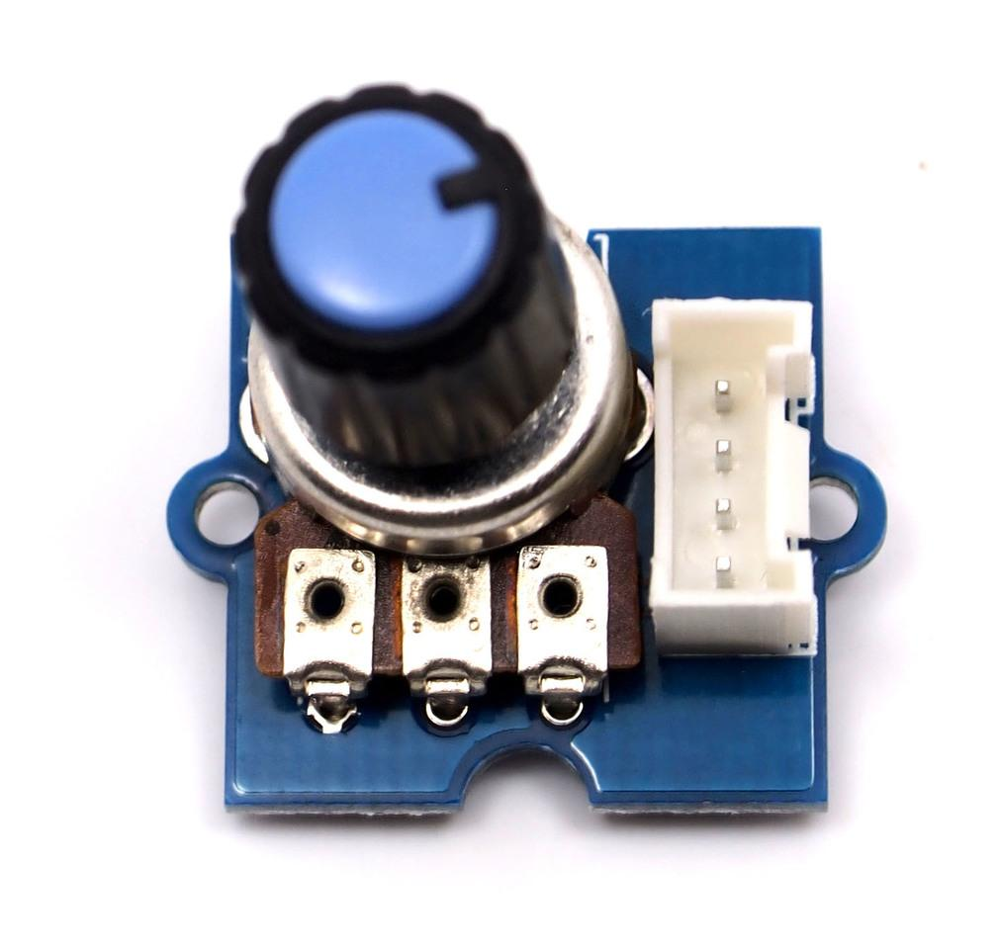
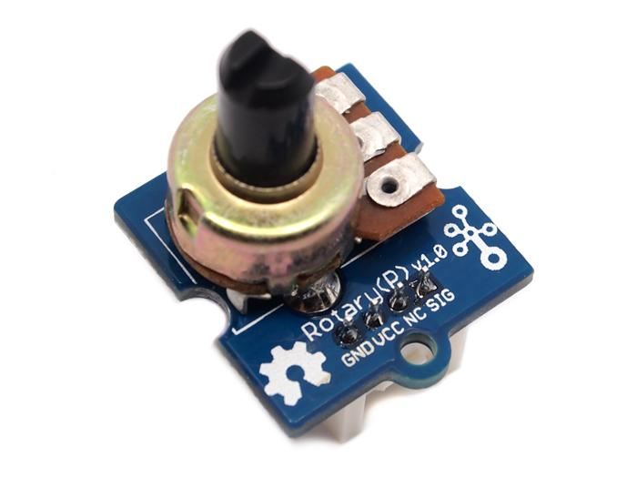
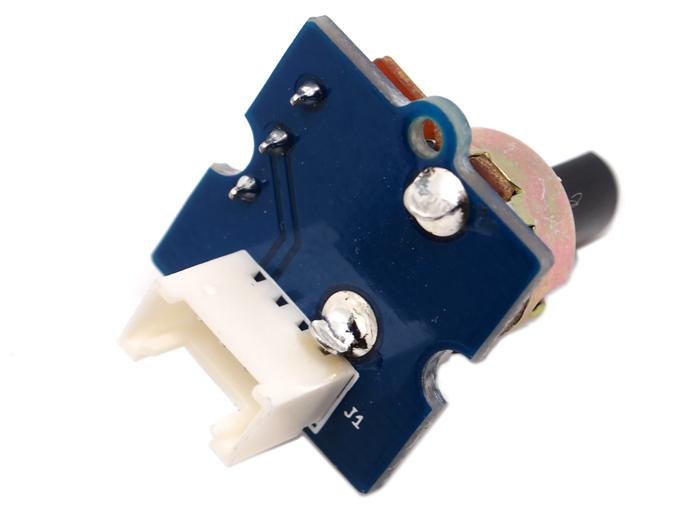
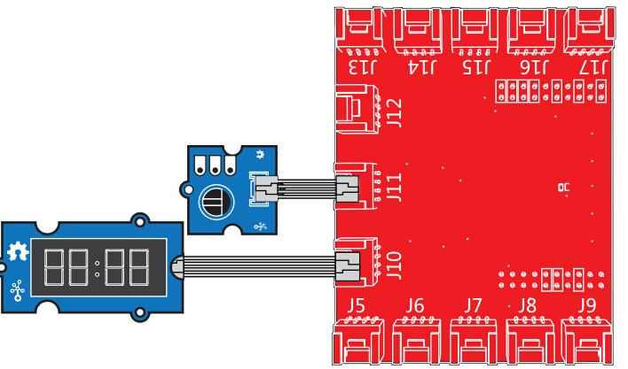

The rotary angle sensor produces analog output between 0 and Vcc (5V DC with Seeeduino) on its D1 connector. The D2 connector is not used. The angular range is 300 degrees with a linear change in value. The resistance value is 10k ohms, perfect for Arduino use. This may also be known as a “potentiometer ”.
Model:COM22735P

There is another production - Grove - Rotary Angle Sensor(P). What does “P” mean? “P” is for “panel mount” in this product.It is the sister version of Grove - Rotary Angle Sensor. They are identical except the Grove connecter is moved to the back so that you can easily use it as a neat and wire-free human interface device.
Model:COM08212P

| Item | Min | Typical | Max | Unit |
|---|---|---|---|---|
| Voltage | 4.75 | 5.0 | 5.25 | VDC |
| Rotary Angle | 0 | ~ | 300 | Deg |
| Dimension | 19x19x30.1 | mm | ||
The following sketch demonstrates a simple application of using the rotary angle sensor to control the brightness of the LED. The degrees of Rotary Angle Sensor is 0~300 degrees, we should be converted to the corresponding voltage value in demo code for controlling the brightness of the LED.

/******************************************************************************/
/*macro definitions of Rotary angle sensor and LED pin*/
#define ROTARY_ANGLE_SENSOR A0
#define LED 2//the Grove - LED is connected to D3 of Arduino
#define ADC_REF 5//reference voltage of ADC is 5v.If the Vcc switch on the seeeduino
//board switches to 3V3, the ADC_REF should be 3.3
#define GROVE_VCC 5//VCC of the grove interface is normally 5v
#define FULL_ANGLE 300//full value of the rotary angle is 300 degrees
void setup()
{
Serial.begin(9600);
pinsInit();
}
void loop()
{
int degrees;
degrees = getDegree();
Serial.println("The angle between the mark and the starting position:");
Serial.println(degrees);
int brightness;
/*The degrees is 0~300, should be converted to be 0~255 to control the*/
/*brightness of LED */
brightness = map(degrees, 0, FULL_ANGLE, 0, 255);
controlBrightness(brightness);
delay(500);
}
void pinsInit()
{
pinMode(ROTARY_ANGLE_SENSOR, INPUT);
pinMode(LED,OUTPUT);
}
/*PWM control brightness */
/*If brightness is 0,the LED is off. */
/*The Greater the brightness, the brighter the LED.*/
/*The range of brightness is 0~255 */
void controlBrightness(int brightness)
{
analogWrite(LED,brightness);
}
/************************************************************************/
/*Function: Get the angle between the mark and the starting position */
/*Parameter:-void */
/*Return: -int,the range of degrees is 0~300 */
int getDegree()
{
int sensor_value = analogRead(ROTARY_ANGLE_SENSOR);
float voltage;
voltage = (float)sensor_value*ADC_REF/1023;
float degrees = (voltage*FULL_ANGLE)/GROVE_VCC;
return degrees;
}
Reading the Potentiometer (Rotary Angle Sensor)

/*
Rotary Angle Sensor
Demonstrates analog input by reading an analog sensor on J16 of the Grove Base BoosterPack. The speed of the red LED on the LaunchPad will change depending on the position of the potentiometer knob. This example will also display the analog reading value on the Grove 4-digital display.
The circuit:
* Potentiometer attached to pin 24 (J6 on Grove Base BoosterPack)
* center pin of the potentiometer to the analog pin
* one side pin (either one) to ground
* the other side pin to VCC (3.3V)
* Note: Because of unstable of the voltage, the value of the rotary angle sensor
varies slightly from run to run even you don't touch it.
Created by Oliver Wang
This example code is in the public domain.
http://www.seeedstudio.com/wiki/GROVE_-_Starter_Kit_v1.1b#Grove_-_Rotary_Angle_Sensor
*/
#include "TM1637.h"
/* Macro Define */
#define CLK 39 /* 4-digital display clock pin */
#define DIO 38 /* 4-digital display data pin */
#define ROTARY_ANGLE_P 24 /* pin of rotary angle sensor */
/* Global Variables */
TM1637 tm1637(CLK, DIO); /* 4-digital display object */
int analog_value = 0; /* variable to store the value coming from rotary angle sensor */
int8_t bits[4] = {0}; /* array to store the single bits of the value */
/* the setup() method runs once, when the sketch starts */
void setup() {
/* Initialize 4-digital display */
tm1637.init();
tm1637.set(BRIGHT_TYPICAL);
}
/* the loop() method runs over and over again */
void loop() {
analog_value = analogRead(ROTARY_ANGLE_P); /* read the value from the sensor */
memset(bits, 0, 4); /* reset array when we use it */
for(int i = 3; i >= 0; i--) {
/* get single bits of the analog value */
bits[i] = analog_value % 10;
analog_value = analog_value / 10;
tm1637.display(i, bits[i]); /* display by 4-digital display */
}
delay(100);
}
This example uses ADC channel 0 to get the value of the rotary angle.Then gives PWM output to change brightness of LED.
# GrovePi + Grove Rotary Angle Sensor (Potentiometer) + Grove LED
import time
import grovepi
# Connect the Grove Rotary Angle Sensor to analog port A0
# SIG,NC,VCC,GND
potentiometer = 0
# Connect the LED to digital port D5
# SIG,NC,VCC,GND
led = 5
grovepi.pinMode(potentiometer,"INPUT")
grovepi.pinMode(led,"OUTPUT")
time.sleep(1)
# Reference voltage of ADC is 5v
adc_ref = 5
# Vcc of the grove interface is normally 5v
grove_vcc = 5
# Full value of the rotary angle is 300 degrees, as per it's specs (0 to 300)
full_angle = 300
while True:
try:
# Read sensor value from potentiometer
sensor_value = grovepi.analogRead(potentiometer)
# Calculate voltage
voltage = round((float)(sensor_value) * adc_ref / 1023, 2)
# Calculate rotation in degrees (0 to 300)
degrees = round((voltage * full_angle) / grove_vcc, 2)
# Calculate LED brightess (0 to 255) from degrees (0 to 300)
brightness = int(degrees / full_angle * 255)
# Give PWM output to LED
grovepi.analogWrite(led,brightness)
print "sensor_value =", sensor_value, " voltage =", voltage, " degrees =", degrees, " brightness =", brightness
except IOError:
print "Error"
cd GrovePi/Software/Python/
sudo python grove_rotary_angle_sensor.py
If you have questions or other better design ideas, you can go to our forum or wish to discuss.
Copyright (c) 2008-2016 Seeed Development Limited (www.seeedstudio.com / www.seeed.cc)